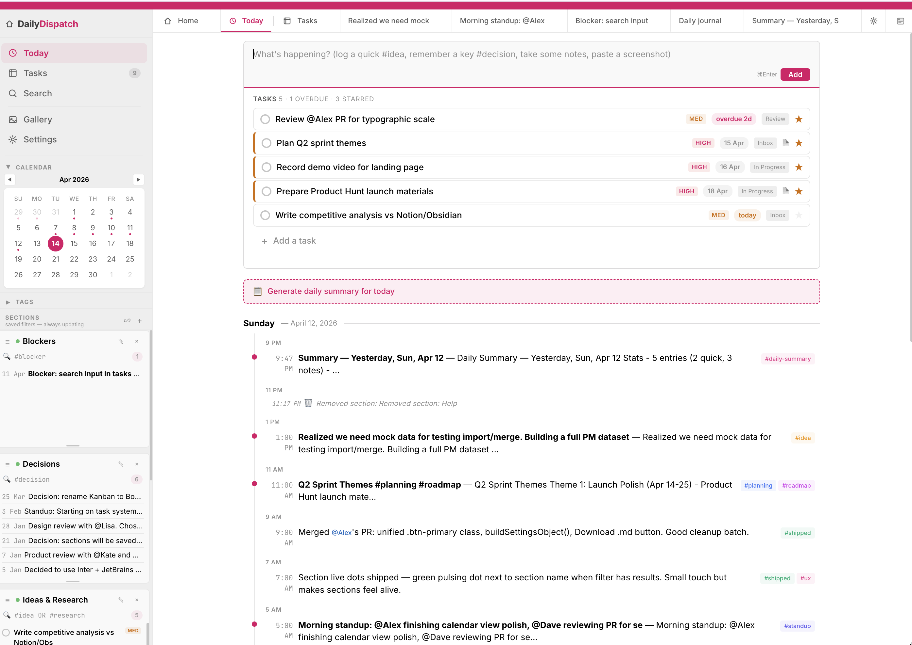

No account. No cloud. No install. Open a single HTML file and you have a full-featured journal with notes, tasks, tables, and search — all stored locally on your device.
Buy on Gumroad
A working system on day one — a feed, a capture box, filtered sections, a task board, and a note editor. All in one file you can inspect, back up, and own.
One 880KB HTML file. No install, no build step, no Electron, no npm. Double-click to open in Chrome, Safari, Edge, Firefox, Arc, or Brave. Works on macOS, Windows, and Linux.
No account. No cloud. No network requests. Your data lives in your browser's local storage and never leaves your machine. Export everything as JSON anytime, or download individual notes as Markdown. Back up to iCloud, Dropbox, git, a USB stick — your data is always yours, never locked in.
Type a thought, press Cmd+Enter. It's timestamped, tagged, and in your feed. No folder decisions, no friction. Tags and @mentions are extracted automatically.
Write in Markdown — headings, lists, code blocks, blockquotes, bold, italic all render live as you type. Download any note as a .md file. Import and export your full journal as JSON. Everything round-trips cleanly — if you leave, your notes work in any Markdown tool.
Kanban columns, priorities, due dates, a Today star, drag-and-drop ordering — all stored inside your notes. No separate app needed.
Pop any note into its own window. Take meeting notes during a video call without switching apps or losing your place. Changes sync back when you close it.
/table, /task, /date, /template, /status, /code, /smartlist, and more. Type a slash in any note and pick from the menu. Power features without memorizing shortcuts.
10 light + 5 dark. Switch with one click in Settings. From Warm Notion to Midnight to Hot Pink — find the palette that fits how you think.
Every note app wants something from you. DailyDispatch doesn't.
You've tried Obsidian but didn't want to design your own system from scratch. You've looked at Notion but don't want your work journal on someone else's infrastructure. You've used Apple Notes but outgrown it.
DailyDispatch is for engineers, PMs, designers, researchers, and founders — people whose work is thinking and typing. It hands you a working system on day one: a feed, a capture box, filtered sections, a task board, and a note editor — all in one file you can inspect, back up, and own forever.
Every common action has a shortcut. Open the command palette, find any note, create a task, submit an entry — without lifting your hands.
Find anything
Cmd+Shift+O
Full-text search
Cmd+K
New note
Cmd+;
Submit entry
Cmd+Enter
Close tab
Cmd+D
Floating window
Cmd+Shift+F
One file. No strings attached.
Buy DailyDispatchDailyDispatch keeps it that way.